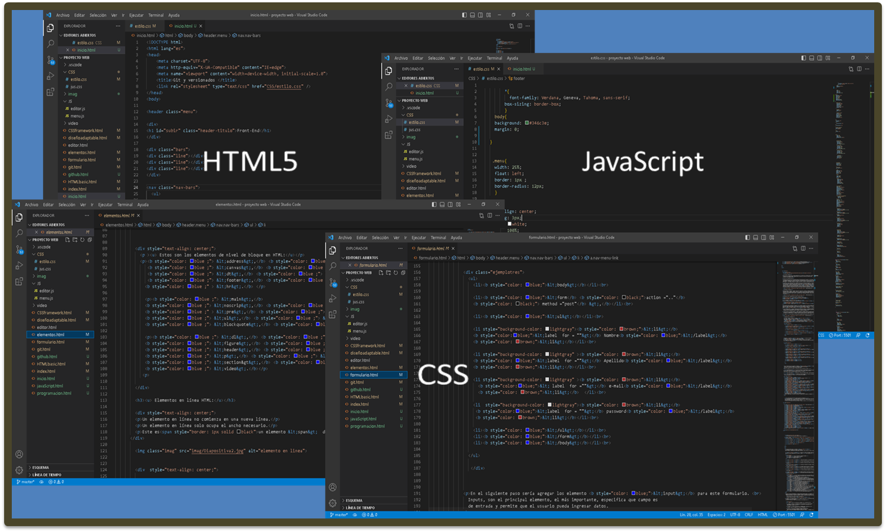
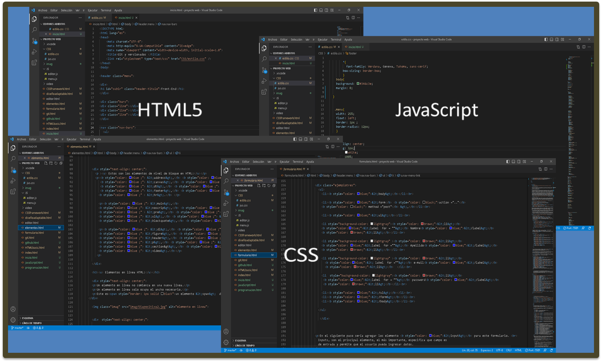

Bienvenido a Front-End
Introducción al Desarrollo Web: HTML5-CSS-JavScript
En este blog vas a obtener los conocimientos necesarios para dar tus primeros pasos en el desarrollo front-end.
Introducción al Desarrollo Web: HTML5-CSS-JavScript
En este blog vas a obtener los conocimientos necesarios para dar tus primeros pasos en el desarrollo front-end.
